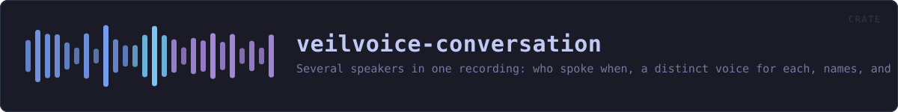

veilvoice-conversation
Several speakers in one recording: who spoke when, a distinct voice for each, names, and subtitles.
reference · the same page on GitHub
Several people in one recording: a plan of who spoke when, a distinct destination voice for each of them, and subtitles that carry their names.
Why this exists
VeilVoice's whole argument is that every speaker is mapped onto one canonical voice, so many inputs give one output and there is no inverse to compute. Run an interview through it and both people come out as the same voice — which is perfectly private and completely unusable, because a listener cannot tell a question from its answer.
This crate keeps the property and fixes the usability. Each speaker is assigned a slot, each slot has its own canonical destination (veilvoice_core::voices), and every speaker in a slot is normalised onto that destination exactly as thoroughly as a lone speaker is normalised onto the default one. There are ten buckets instead of one; each is still many-to-one.
What a conversation costs, said plainly
- The number of speakers survives. Three voices in the output means three people were in the room.
- The turn-taking survives. Who spoke when, for how long, who interrupted whom, the rhythm of the exchange. That is preserved on purpose — it is what makes the result worth listening to — and it is information about the conversation.
- Names are whatever you type. A subtitle saying "Alex" contains the string "Alex". The audio is veiled; a caption is not, and this crate cannot veil a name for you.
- The voiceprints do not survive. Each speaker is destroyed as thoroughly as in single-speaker mode.
VeilVoice does not decide who is talking
Working that out from audio alone is speaker diarisation and needs a trained model. There is no model here, there is no server to ask, and guessing would be worse than not offering it: a wrong guess either merges two people or invents a third, and neither would be visible in the output. So the plan comes from the user — a channel per person, or a list of turns. See plan.
The modules
| Module | What it owns | |---|---| | plan | Who is in the recording, when they speak, and the text format | | subtitles | WebVTT and SubRip, from the same plan |
HOW THE CRATE FITS TOGETHER
Every arrow is a crate:: or super:: path one module actually uses, read out of the source rather than drawn by hand.
The same graph as Mermaid source
%%{init: {"theme":"base","themeVariables":{"background":"#1a1b26","primaryColor":"#1f2335","primaryTextColor":"#c0caf5","primaryBorderColor":"#7aa2f7","secondaryColor":"#16161e","tertiaryColor":"#16161e","lineColor":"#737aa2","textColor":"#c0caf5","mainBkg":"#1f2335","nodeBorder":"#7aa2f7","clusterBkg":"#16161e","clusterBorder":"#2f3549","fontFamily":"ui-monospace, SFMono-Regular, Consolas, monospace","fontSize":"14px"}}}%%
flowchart TD
n_lib(["lib.rs<br/>163 lines"])
n_plan["plan.rs<br/>737 lines"]
n_subtitles["subtitles.rs<br/>263 lines"]
click n_lib href "https://github.com/tilas01/veilvoice/blob/main/crates/veilvoice-conversation/src/lib.rs" "open the source"
click n_plan href "https://github.com/tilas01/veilvoice/blob/main/crates/veilvoice-conversation/src/plan.rs" "open the source"
click n_subtitles href "https://github.com/tilas01/veilvoice/blob/main/crates/veilvoice-conversation/src/subtitles.rs" "open the source"This site loads no third-party script, so it cannot run Mermaid; the diagram above is the same nodes and edges drawn by the generator instead. GitHub renders the source below directly.
THE FILES
| File | Lines | What it is |
|---|---|---|
lib.rs | 163 | Several people in one recording: a plan of who spoke when, a distinct destination voice for each of them, and subtitles that carry their names. |
plan.rs | 737 | Who is in the recording, and who is speaking when. |
subtitles.rs | 263 | Subtitles, from the same plan the audio is rendered from. |